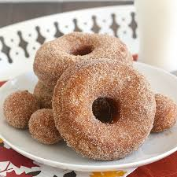

Krispy Kreme Donut Dab
This is a donut recipie for my own donut recipe. Okay it's not original. It is from Krispy Kreme, but I like them so i'll show you how to make them without needing coffe.
Ingrediants
- 2 (1/4 ounce) packages yeast
1⁄4 cup water
- 1 1⁄2 cups lukewarm milk
- 1⁄2 cup sugar
- 1 teaspoon salt
- 2 eggs
- 1⁄2 cup shortening
- 5 cups all-purpose flour
- canola oil
- brown sugar
- cinimon
Directions
Dissolve yeast in warm water in 2 1/2-quart bowl.
Add milk, sugar, salt, eggs, shortening and 2 cups flour.
Beat on low for 30 seconds, scraping bowl constantly
Beat on medium speed for 2 minutes, scraping bowl occasionally.
Stir in remaining flour until smooth
Cover and let rise until double, 50-60 minutes or over night. This will be a long sleep for the dough.
Once dough is risen, take out the dough and place it on flour.
Gently roll dough 1/2-inch thick with floured rolling pin.
Cut with floured doughnut cutter. If you have left over dough, roll out again. Or you could have a little sneak of dough.
Cover and let rise until double, 30-40 minutes.This covering is like a cat nap.
Onece the dough has risen more, heat vegatinle oil to fry.
Slide in donuts and cook both sides. Put of rack to drain them. I personally like to then put them on a paper towl after draining them, just to make sure the grease has drainded more.
Put 1/4 of cugar and 3 tablespoons of cinimon. Shake donuts in a bag with this mixture.
And you are done! Now you can stuff your face with donuts and show your friends you can bake.
Result!
